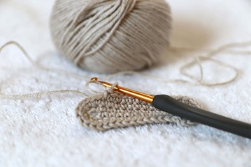
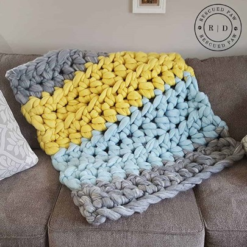

Learn to crochet!
Crocheting is like easy knitting! You can make beautiful things with it!
Crochet with big yarn to make big soft blankets, or even stuffed animals!
Substitute the smaller yarn with big yarn to make big blankets or stuffed animals!
Learn origami!

Origami is a fun way to do something creative! There are many different things to make with paper!
Flower arrangment
Go out and buy some flowers, then learn how to best arrange them into a decoration! The best way to learn is through experience!
Make your own cups
If you want to make your own cups, or just want some fun figurines, why not go out and buy some clay! Might be a fun little experiment!